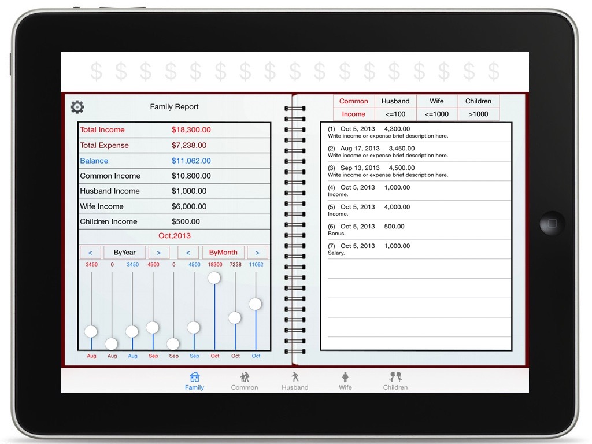
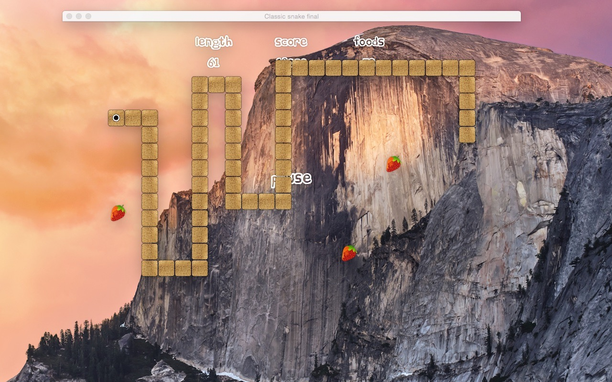

Feel free to mail me: yu_tian_jian@163.com
Feel free to mail me: yu_tian_jian@163.com
欢迎随时联系：yu_tian_jian@163.com
我的App简要介绍（下列App都包括iMac和iPhone/iPad版本）
桥牌系列：桥牌训练馆、桥牌最佳牌例赏析、桥牌做庄练习、快乐桥牌等。
围棋系列：围棋狗（打谱软件）、现代围棋谱、围棋经典收藏、吴清源全集等。
象棋系列：象棋学士（打谱软件）、象棋圣经、象棋大师谱等。
扑克游戏：升级超地皮、拖拉机、拱猪、斗地主等。
记事本： 随身记事本、家庭理财记账等
娱乐： 广播电视直播源Player （获得技术支持请点击以下链接）
http://TVPlayerSupport.github.io/TVPlayerSupport/）
围棋狗(专业打谱软件)主要功能：
1）打谱功能
可以完成正常棋谱、白先棋谱、让子棋、死活题的打谱与保存。
2）分页显示棋谱
可以根据棋谱总手数，分页显示棋谱，比如从显示1-50手棋谱，51-100手棋谱等，方便看谱。
3）棋谱库
包含大量各类古代和现代经典棋谱以及中日韩三国顶级棋谱的实战棋谱，便于学习和研究。
4）提供个人打谱保存后的演示功能
自己可以大量保存所录入的棋谱，供演示和研究。
5）将录入的围棋谱导出为sgf格式。
6）读取sgf格式棋谱。（不支持变化图）

象棋学士，中国象棋打谱软件，专为象棋打谱而设计。
支持PGN格式棋谱文件！可充分利用PGN棋谱资源。
支持PGN棋谱数据库，一个PGN文件可以包含多个对局棋谱。
支持评注的编辑与修改!
自定义xdp格式，支持所有特殊情况的打谱！
主要功能如下：
1）打谱功能
可以完成象棋棋谱的打谱与保存，录入评注信息，保存内容包括对局基本信息、评注信息、对局过程。注意：不支持变着。
2）复制与粘贴布局功能
可在任何局面下复制棋子布局，在残局打谱模式下粘贴布局，打谱更方便。
3) 读谱功能
可以读取PGN棋谱文件中的对局信息、评注信息，进行演示和研究。
4）PGN棋谱格式和xdp格式
可以将棋谱文件保存为PGN格式或xdp格式，有大量的PGN格式棋谱文件可供使用。
xdp是自定义格式，适应所有特殊棋谱（如5个兵在同一条线上）的打谱。
5) 支持PGN棋谱数据库
支持一个PGN文件包含多个对局棋谱，包含棋谱数量不限，阅读棋谱更便捷。
6）棋谱文件命名
保存棋谱时，可自己命名棋谱文件，便于自己分类管理棋谱文件。
7）棋谱库
包含大量各类古代和现代经典棋谱以及中国顶级象棋棋手的实战对局，便于学习和研究。
8）演示功能
可以进行单步、自动演示和研究，操作便捷。

Home